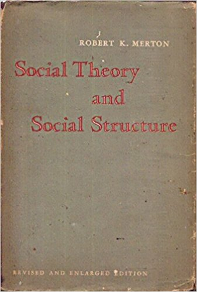

Science and Democratic Social Structure
Robert K. Merton
Henrique Andrade
21 de março de 2017 - Rio de Janeiro
Roberto K. Merton

- Nascido Meyer Robert Schkolnick em 1910
na Pensilvânia, filho de judeus russos ídiche.
- Nome artístico vem da mistura de Robert-Houdin com Merlin.
- Professor da Universidade Columbia de Nova Iorque, foi o primeiro americano membro da Royal Swedish Academy of Sciences e Corresponding Fellow of the British Academy
- Primeiro a sociólogo a ganhar a US National Medal of Science, por "founding the sociology of science and for his pioneering contributions to the study of social life, especially the self-fulfilling prophecy and the unintended consequences of social action".
- Também conhecido por criar o conceito de "role model" e as "normas de Merton".
Social Theory and Social Structure

Coletânea de ensaios que não foram originalmente destinados a constituirem um só volume.
- Publicado em 1949
- Revisado em 1957
- Ampliado em 1968.
Reconhecido pela International Sociological Association como terceiro mais importante livro de sociologia do século 20.
Social Theory and Social Structure
Organizado em 4 partes:
- On Theoretical Sociology
- Studies in Social and Cultural Structure
- The Sociology of Kwoledge and Mass Communications
- Studies in the Sociology of Science
Ensaio "XVII. Science and Democratic Social Structure" foi escrito em 1942.
##CIÊNCIA E SOCIEDADE
#### a vitoriosa ciência
---
* "Agora que têm que enfrentar ameaças ao seu modo de vida, os intelectuais foram lançados a um estado de aguda conscientização: consciência da própria personalidade como elemento integrante da sociedade, e das obrigações e interesses correspondentes." (p. 651)
* "Três séculos atrás, quando a instituição da ciência pouca justificação podia apresentar para conseguir o apoio da sociedade, os filósofos naturais eram levados assim mesmo a justificar a ciência como um meio para fins culturalmente válidos de utilidade econômica ou de glorificação de Deus. **O cultivo da ciência não era então um valor evidente por si mesmo. Mas, com a interminável corrente de êxitos obtidos pela ciência, o instrumental se transformou em final, os meios se transformaram em fins.**" (p. 652)
##CIÊNCIA E SOCIEDADE
####a ambivalente ciência
---
* "a palavra ciência é um vocábulo enganosamento amplo, que designa grande diversidade de coisas, embora relacionadas entre si. (...) Aqui estamos tratando, preliminarmente, da estrutura cultural da ciência, isto é, de um aspecto limitado da ciência como instituição. Assim, pois, exataminaremos não os métodos da ciência, mas os costumes que os circundam." (p. 652)
* "o 'ethos' da ciência é esse complexo de valores e normas adetivamente tonalizado, que se considera como constituindo uma obrigação moral para o cientista. As normas são expressas em forma de prescrições, proscrições, preferências, e permissões, que se legitiam em relação com valores institucionais (...) Embora o ethos da ciência não tenha sido codificado², pode ser inferido do **consenso moral dos cientistas** expresso nos usos e costumes, em numerosas obras sobre o espírito científico e na indignação moral que suscitam as contravenções do 'ethos'." (p. 652/3)
##O "ETHOS" DA CIÊNCIA
---
* "Essa moral (da ciência) não teve seus teóricos, mas teve seus artesãos. Ela não expressa seu ideal, mas o serve: ele está implicado na própria existência da ciência." *Bayet* (p. 653)
* "Os 'mores' da ciência têm uma explicação racional metodológica mas são moralmente obrigatórios, não somente porque são eficazes do ponto de vista do procedimento, mas também porque são considerados justos e bons. É um conjunto de prescrições tanto morais como técnicas." (p. 654)
##IMPERATIVOS INSTITUCIONAIS
####as normas de Merton
---
- Universalism
- Communalism
- Disinterestedness
- Organized skepticism
## UNIVERSALISM
####a neutralidade
---
* "**A objetividade exclui o particularismo.** A circunstância de que as formulaçõe scientificamente verificadas se referem a sequências e correlações objetivas, milita contra todas as tentativas de impor critérios particulares de validez. Um decreto de Nuremberg não pode invalidar o processo Haber, nem a lei da gravitação pode ser revogada por anglofobia. (...) **O imperativo de universalismo tem raízes profundas no caráter impessoal da ciência**". (p. 654)
* "**Quando a cultura maior se opõe ao universialismo, o 'ethos' da ciência é submetido a fortes tensões.**" (p. 655)
## UNIVERSALISM
####controvérsia de rodapé
---
- "O etnocentrismo não é compatível com o universalismo" (p. 655)
- Réplica: "**Só um cosmopolita sem pátria, profundamente insensível aos destinos reais da ciência, poderia negar, com desprezível indiferença, a existência das matizadas formas nacionais em que a ciência vive e se desenvolve.** Em vez da verdadeira história da ciência e dos caminhos concretos do seu desenvolvimento, o cosmopolita apresenta conceitos fabricados de um tipo de ciência supernacional e sem classe, despojada, por assim dizer, de toda a riqueza de coloração nacional, despojada do brilho vivo e do caráter específico do trabalho criado de um povo e transformado numa espécie de espírito desencarnado... **O marxismo-leninismo despedaça as ficções cosmopolitas concernentes à ciência supraclassista, não nacional, 'universal' e demonstra definitivamente que a ciência, como toda a cultura da sociedade moderna, é nacional na forma e classe quanto ao conteúdo**" Vorposy filosofii
## UNIVERSALISM
####controvérsia de rodapé
---
Tréplica: "Esta opinião confunde duas questões distintas: primeiro, o ambiente cultural numa sociedade ou nação determinada pode predispor os cientistas a enfocar a atenção sobre certos problemas, a se mostrarem sensíveis a uns problemas e não a outros, dentro das fronteiras da ciência. Isto tem sido observado há muito tempo, mas é fundamentalmente diferente da segunda questão: **os critérios de validez dos títulos para que um conhecimento seja considerado científico, não são assuntos de gosto ou de cultura nacionais. Cedo ou tarde, os títulos em competição para a validez são fixados pelos fatos universalistas da natureza que estão em consonância com uma teoria e naõ com outra**."
"Mas este mesmo desvio dessa norma do universialismo pressupunha realmente, sua legitimidade. o preconceito nacionalista só é vergonhosoquando julgado de acordo com a norma do universialismo; dentro de outro contexto institucional é definido como virtude: é o patriotismo. **Assim, pelo próprio fato de condenar sua violação, são reafirmadas as normas morais**." (p. 656)
## UNIVERSALISM
####Conclusão pós-tréplica:
---
* "Foi reafirmado o caráter internacional, impessoal, virtualmente anônimo, da ciência.6 (Pasteur disse: "*O cientista tem uma pátria, a ciência não*). **A negação da normal se considerava uma quebra da fé.**" (p. 656)
* "*Não se pode ter uma verdade alemã, inglesa, italiana ou japonesa mais que uma francesa. E falar de ciência alemã, inglesa ou francesa é enunciar uma proposição contraditória a própria ideia de ciência*" (Gley)
## UNIVERSALISM
####meritocracia
---
* "O universialismo encontrou nova expressão, ao exigir que todas as carreiras fossem abertas ao talento. A base racional é fornecida pela meta institucional. Restringir as carreiras científicas por outros motivos que a falta de competência é prejudicar a promoção do saber" (p. 656)
* "se encontrassem mmais comerciantes **assim**, os administessem imediatamente e sem discussão" Carlos II
## UNIVERSALISM
####o "ethos" da democracia
---
"A democratização equivale à eliminação progressiva de restrições ao exercício e desenvolvimento de talentos socialmente valorados. Os critérios impessoais de realização e a não estabilidade de status caracterizam a sociedade democrática. Na medida em que persistem restrições são consideradas como obstáculos no caminho da democratização total. Assim, na medida em que **a democracia do "laissez-faire" permite a acumulação de vantagens diferenciais para certos setores da população, diferenciais que não estão vinculadas com diferenças demonstradas de capacidade**, o processo democrático conduz à crescente regulagem pela autoridade política." (p. 657)
##COMMUNALISM
####a ciência tem proprietário?
---
* "**As descobertas substantivas da ciência são produto da colaboração social e estão destinados à comunidade.** Constituem herança comum em que os lucros do produtor individual estão severamente limitados. Uma lei ou teoria não é propriedade exclusiva do descobridor e dos seus herdeiros, nem os costumes lhes concedem direitos especiais de uso e disposição. **Os direitos de propriedade na ciência são reduzidos ao mínimo pelas razões e princípios da ética científica.**" (p. 657)
* "Dada a importância institucional de **gratidão e da estima como o único direito de propriedade do cientista sobre os seus descobrimentos**, o interesse pela prioridade científica é uma reação 'normal'. As controvérias sobre prioridade que marcam a história da ciência moderna são produto da importância institucional concedida à originalidade9. **Surge uma cooperação competitiva. Os resultados da competição são comunizados e a estima cresce para o produtor.**" (p. 658)
##COMMUNALISM
####resistência médica a reserva de mercado
---
* "a profissão médica... naturalmente franzia o sobrolho ante as patentes tiradas por médicos... A profissão regular tem... matido essa posição constantemente, contra os monopólios privados, desde o advento da lei de patentes do século XVII." (Shryock, 1938)
* "O conceito institucional da ciência como parte do domínio público está ligado ao imperativo da comunicação dos resultados. O segredo é a antítese dessa norma; a plena e franca comunicação é o seu cumprimento." (p. 658)
##COMMUNALISM
####propriedade privada x capitalismo
---
- "O comunismo do 'ethos' científico é incompatível com a definição da tecnologia como 'propriedade privada' numa economia capitalista." (p. 659)
- "Plágio é subtração de ideias." Alexandre de Moraes
- "As patentes realmente invadem descobridores independente de uma ideia ou uma invenção que calham de fazer a descoberta após o detentor da patente. Esses inventores e descobridores são impedidos pela força de empregar suas próprias ideias e seus próprios bens." Murray Rothbard
##COMMUNALISM
####licenças livres
---
"Como medida defensiva, alguns cientistas chegaram a patentear sua obra para garantir que seria posta à diisposição do uso público." (p. 569/60)
##DISINTERESTEDNESS
####a integridade do cientista neutro (ou a neutralidade do cientista íntegro)
---
* "Ao cientista tem sido atribuído a paixão de saber, uma curiosidade ociosa, um interesse altruista pelo benefício da humanidade e muitos outros motivos especiais. A procura das motivações distintivas parece ter sido mal orientada. *É antes um padrão típico de controle institucional de uma ampla margem de motivações o que caracteriza o comportamento dos cientistas*" (p. 660)
* "A exigência de desinteresse tem forme alicerce no carater público e testável da ciência e podemos supor que esta circunstância contribuiu para a integridade do homem de ciencia." (p. 660)
##DISINTERESTEDNESS
####a vigilância da pureza que fica em risco quando a ciência cochila
---
* "(...) em geral, as **pretensões espúrias parecem ser negligíveis e ineficazes**. A transformação da norma de desinteresse em prática é firmemente apoiada pela necessidade que os cientistas tem, ais cedo ou mais tarde, de prestar contas perante os seus colegas. Coincidem em grande parte os ditames do sentimento socializado e da conveniência, situação esta que **conduz à estabilidade institucional.**" (p. 661)
* "O abuso da autoridade dos peritos e a criação de pseudociências entram em campo quando a estrutura de controle exercida por colegas se torna ineficiente". (p. 661)
##DISINTERESTEDNESS
####os falsos ~~profetas~~ cientistas
---
"**Toda nova tecnologia atesta a integridade do cientista. A ciência realiza suas pretensões. Mas sua autoridade pode ser e é aproveitada para propósitos interessados, precisamente porque os leigos não estão amiúde em situação de distinguir as prensões espúrias dessa autoridade.** As declarações presumivelmente cientfícas dos porta-vozes totalitários sobre a raça, a economia ou a história são, para os leigos incultos, da mesma ordem que as informações dos jornais sobre um universo em expansão ou a mecânica de ondas. Em ambos os casos declarações e informações tais não podem ser testadas pelo homem da rua e, em ambos os casos, podem ser contrárias ao bom-senso. **Talvez os mitos possam parecer mais admissĩveis, e seguramente mais compreensíveis ao público em geral, que as teorias científicas acreditadas, já que estão mais perto da experiência de sentido comum e da tendência cultural.**" (p. 661)
##ORGANIZED SKEPTICISM
####os adversários institucionais
---
* "A resistência por parte da religião organizada tem perdido importância em comparação com a dos grupos econômicos e políticos. **A oposição pode também existir completamente à parte da introdução de descobertas científicas específicas que parecem invalidar dogmas particulares da Igreja, da ecnomia ou do Estado. É antes uma apreensão difusa, muitas vezes vaga, de que o ceticismo ameaça a distribuição de poder vigente**" (p. 662)
* "Na sociedade totalitária moderna, o anti-racionalismo e a centralização do controle institucional servem ambos para limitar o campo deixado à atividade científica." (p. 662)
##CONTRAPONTO
---
- Ian I. Mitroff
- Aponta contra-normas que também podem atuar de forma positiva no avanço da ciência.
- Livro: The subjective side of science : a philosophical inquiry into the psychology of the Apollo moon scientists
##CONTRAPONTO
####artigo
---
- Norms and Counter-Norms in a Select Group of the Apollo Moon Scientists: A Case Study of the Ambivalence of Scientists
- American Sociological Review
- Vol. 39, No. 4 (Aug., 1974), pp. 579-595
- Published by: American Sociological Association
- Stable URL: http://www.jstor.org/stable/2094423
##CONTRAPONTO
####contra-normas
---
| Norms | Counter-Norms |
| ------------------ |---------------------|
|Particularism | Universalism |
|Solitariness | Comunism |
|Interestedness | Desinterestedness |
|Organized dogmatism | Organized Skepticism|
*Table 4 "A Tentative List of Norms and Counternorms" (p. 592)*
##CONTRAPONTO
####contra-normas
---
Também aponta mais dois conceitos de Science and the Social Order, de Bernard Barber, 1952:
* Faith in the moral virtue of rationality x Faith in the moral virtue of rationality and nonrationality
* Emotional neutrality x Emotional commitment
##Communism x Particularism
####"Há homens que andam no mar como se andassem na rua. Não conte."
---
* "Science typically measures the significance of a piece of work by its statistical significance. Perhaps the social teste of the real significance of a scientist's work is weather it is worth stealing or not."
* "Whatever the ultimate implications of the study, it has long been an unwritten rule of science that you don't divulge what you're up to until you're 99% sure that you've got the competition beat in the race to print".
##Conclusão
####"é muito complicado ou será que a gente que complica?"
---
* "This paper has argued that science contains norms and counter-norms. Indeed, the concept of sociological ambivalence suipposes that one set of norms id dominant and the other subsidiary. However, as this study reveals, the actual situation is more complicated. Norms dominant in one situation can be subsidiary in another." (p. 593)
* "Dominancy is not an invariant property of a set of norms. The dependence of dominancy on situations undoubtedly derives from a host of factors (cf. Mitroff, 1973) such as the paradigmatic structure of science (Kuhn, 1962)." (p. 593)